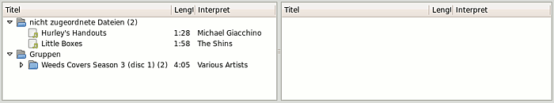
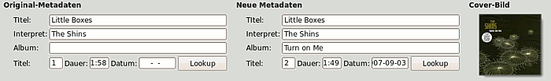
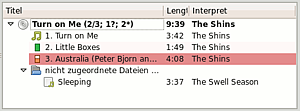
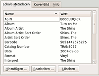

Musicbrainz Picard
Ausbaufähige Anleitung
Dieser Anleitung fehlen noch einige Informationen. Wenn Du etwas verbessern kannst, dann editiere den Beitrag, um die Qualität des Wikis noch weiter zu verbessern.
Anmerkung: Der Artikel beschreibt eine ältere Version des Programms. Wer eine jüngere Ubuntu-Version (Ubuntu 12.10+) oder das PPA nutzt, erhält dagegen eine neuere Version, die sich in Funktionsumfang und Bedienung deutlich unterscheidet. Wer den Artikel überarbeiten möchte, meldet sich bitte in der Diskussion des Artikels.
Dieser Artikel wurde für die folgenden Ubuntu-Versionen getestet:
Ubuntu 16.04 Xenial Xerus
Ubuntu 14.04 Trusty Tahr
Musicbrainz Picard  ist ein Musiktagger für verschiedene Audio- und Metadatenformate, u.a. MP3, Ogg Vorbis, FLAC, MP4 und WMA. Picard greift zum Vervollständigen der Metadaten auf die Internet-Datenbank MusicBrainz zu, die über die Berechnung eines akustischen Fingerabdrucks (PUIDs) auch die automatische Identifikation nicht getaggter Songs ermöglicht. Eine aktive Internetverbindung ist für die Nutzung des Programm daher erforderlich. Auch Cover-Bilder (Album-Art) können automatisch hinzugefügt werden. Im Gegensatz zu anderen Metadaten-Editoren wie z.B. EasyTAG verfolgt Picard einen album-orientierten Ansatz.
ist ein Musiktagger für verschiedene Audio- und Metadatenformate, u.a. MP3, Ogg Vorbis, FLAC, MP4 und WMA. Picard greift zum Vervollständigen der Metadaten auf die Internet-Datenbank MusicBrainz zu, die über die Berechnung eines akustischen Fingerabdrucks (PUIDs) auch die automatische Identifikation nicht getaggter Songs ermöglicht. Eine aktive Internetverbindung ist für die Nutzung des Programm daher erforderlich. Auch Cover-Bilder (Album-Art) können automatisch hinzugefügt werden. Im Gegensatz zu anderen Metadaten-Editoren wie z.B. EasyTAG verfolgt Picard einen album-orientierten Ansatz.
Installation¶
Picard kann mit dem Paket
picard (universe)
 mit apturl
mit apturl
Paketliste zum Kopieren:
sudo apt-get install picard
sudo aptitude install picard
über die Paketverwaltung installiert werden [1].
PPA¶
Die aktuellste Version kann über ein "Personal Package Archiv" (PPA) [2] der Entwickler installiert werden.
Adresszeile zum Hinzufügen des PPAs:
ppa:musicbrainz-developers/stable
Hinweis!
Zusätzliche Fremdquellen können das System gefährden.
Ein PPA unterstützt nicht zwangsläufig alle Ubuntu-Versionen. Weitere Informationen sind der  PPA-Beschreibung des Eigentümers/Teams musicbrainz-developers zu entnehmen.
PPA-Beschreibung des Eigentümers/Teams musicbrainz-developers zu entnehmen.
Damit Pakete aus dem PPA genutzt werden können, müssen die Paketquellen neu eingelesen werden.
Nach dem Aktualisieren der Paketquellen erfolgt die Installation wie oben angegeben.
Bedienung¶
Die Vorgehensweise in Picard wirkt auf den ersten Blick oft verwirrend. Nach einer kurzen Einarbeitungszeit lassen sich Audiodateien damit aber meist sehr effektiv und genau taggen.
Ablauf¶
Das Anwendungsfenster von Picard teilt sich in zwei Bereiche auf. Auf der linken Seite befinden sich nicht analysierte Dateien. Im rechten Fenster sind die später erfolgreich identifizierte Musiktitel zu finden. Zu analysierende Dateien können über "Dateien hinzufügen" oder "Ordner hinzufügen ..." ausgewählt werden. Sie werden anschließend im linken Fenster unter "nicht zugeordnete Dateien" aufgelistet. Wurden die Audiodateien bereits vorher in Musicbrainz getagt, erscheinen sie sofort auf der rechten Seite.

Taggen bekannter Titel¶
Über "Gruppieren" können die hinzugefügten Dateien auf Basis bereits bestehender Album-Tags automatisch gruppiert werden. Die existierenden Metadaten werden unter "Original-Metadaten" angezeigt.

Nach Klicken auf das Symbol "Lookup"  oben in der Symbolleiste versucht Picard, die markierten Audiodateien anhand bereits existierenden Tags und der Titellänge mit Hilfe der Musicbrainz-Datenbank eindeutig zu identifizieren und zuzuordnen. Ist dies erfolgreich, werden die Dateien nun auf der rechten Seite unter dem zugeordneten Album aufgelistet. Die erste Zahl in der Klammer hinter dem Albumtitel zeigt die Anzahl der diesem Album erfolgreich zugeordneten Titel an, die zweite Zahl hinter dem Schrägstrich die Gesamtanzahl der Titel des Albums. Eine Zahl mit einem Sternchen "*" verweist auf neu hinzugefügte Titel. Ein "?" gibt die Anzahl der Musikdateien an, die zwar einem Album, aber nicht einer bestimmten Titelnummer zugeordnet werden konnten. Zu beachten ist, dass häufig mehrere Releases eines Albums existieren, mit zum Teil abweichender Titelanzahl und -Reihenfolge.
oben in der Symbolleiste versucht Picard, die markierten Audiodateien anhand bereits existierenden Tags und der Titellänge mit Hilfe der Musicbrainz-Datenbank eindeutig zu identifizieren und zuzuordnen. Ist dies erfolgreich, werden die Dateien nun auf der rechten Seite unter dem zugeordneten Album aufgelistet. Die erste Zahl in der Klammer hinter dem Albumtitel zeigt die Anzahl der diesem Album erfolgreich zugeordneten Titel an, die zweite Zahl hinter dem Schrägstrich die Gesamtanzahl der Titel des Albums. Eine Zahl mit einem Sternchen "*" verweist auf neu hinzugefügte Titel. Ein "?" gibt die Anzahl der Musikdateien an, die zwar einem Album, aber nicht einer bestimmten Titelnummer zugeordnet werden konnten. Zu beachten ist, dass häufig mehrere Releases eines Albums existieren, mit zum Teil abweichender Titelanzahl und -Reihenfolge.
 Der Grad der Übereinstimmung der einzelnen Titel mit den Datenbankeinträgen wird über einen Statusbalken vor dem jeweiligen Titel angezeigt. Ein dunkelgrüner Balken steht für eine sehr hohe, ein gelber für eine mittlere Übereinstimmung, ein roter letztendlich für eine niedrige Wahrscheinlichkeit, dass dieser Titel korrekt zugeordnet wurde. Per Drag & Drop können einzelne Titel verschoben und im Zweifelsfall auch auf "nicht zugeordnete Dateien" zurück gezogen werden. Unter "Neue Metadaten" können die neuen Tags überprüft werden.
Tags aus Dateinamen¶
Enthält die Audiodatei noch keine Metadaten, der Dateiname jedoch Informationen über den Musiktitel, kann dieser zum automatischen Erstellen der Metadaten verwendet werden. Über "Extras -> Tags aus Dateinamen" können mehrere Dateien nacheinander automatisch getagt werden. Dafür ist eine Eingabemaske notwendig, die möglichen Platzhalter werden in der Tabelle "Tag-Mapping" unter Datei-/Ordnernamen anpassen erläutert.

Metadaten Details¶
Eine detaillierte Übersicht über alle Metadaten einer Audiodatei erhält man über die Funktion "Details ..." . Einzelne Tags können dort auch geändert, hinzugefügt oder gelöscht werden.
Titel nicht gefunden¶
Über die Schaltfläche "Lookup" unten links kann eine manuelle Suche anhand der dort aufgeführten Metadaten in der Musicbrainz-Datenbank durchgeführt werden, falls die erste Suche nicht zu dem gewünschten Ergebnis geführt hat. Ist der Track bekannt, enthält aber bisher keine Metadaten, können diese unter "Neue Metadaten" eingegeben und über "Lookup" gesucht werden. Alternativ kann das Suchfeld in der Symbolleiste benutzt werden. Es öffnet sich der Standard-Webbrowser mit den Suchergebnissen. Per Klick auf das Symbol "Open in Tagger" kann das gewünschte Album in Picard eingefügt und die jeweiligen Titel per Drag & Drop zugeordnet werden.
Unbekannte Titel¶
Sind Interpret, Album und/oder Titel nicht bekannt, kann die Musicbrainz-Datenbank über die Funktion "Prüfen" anhand eines von Picard automatisch generierten akustischen Daumenabdrucks nach einer Übereinstimmung durchsucht werden.
Speichern¶
Zum Speichern der neu zugeordneten Metadaten müssen die Titel/Alben markiert und die Funktion "Speichern" ausgewählt werden. Gespeicherte Titel werden durch ein grünes Häkchen symbolisiert.
Erweiterte Suche¶
 Zur gezielten Suche in der Musicbrainz-Datenbank bietet Musicbrainz eine erweiterte Suchsyntax. Möchte man diese in Picard zur Suche benutzen, muss diese Funktion vorher über "Einstellungen -> Einstellungen -> Advanced -> User Interface -> Erweiterte Syntax für Suchanfragen verwenden" aktiviert werden. Alternativ kann die Suche auch direkt auf der Musicbrainz-Suchseite erfolgen. Im folgenden eine kurze Erklärung der Suchsyntax:
Zur gezielten Suche in der Musicbrainz-Datenbank bietet Musicbrainz eine erweiterte Suchsyntax. Möchte man diese in Picard zur Suche benutzen, muss diese Funktion vorher über "Einstellungen -> Einstellungen -> Advanced -> User Interface -> Erweiterte Syntax für Suchanfragen verwenden" aktiviert werden. Alternativ kann die Suche auch direkt auf der Musicbrainz-Suchseite erfolgen. Im folgenden eine kurze Erklärung der Suchsyntax:
| Erweiterte Suchsyntax | |
| Syntax | Ergebnis |
begriff1 begriff2 | enthält begriff1 oder begriff2 |
begriff1 AND begriff2 | enthält begriff1 und begriff2 |
"begriff1 begriff2" | enthält genau "begriff1 begriff2" |
begriff1 AND artist:begriff2 | enthält begriff1, aber nur von Interpret begriff2 |
begriff1 AND release:begriff2 | enthält begriff1, aber nur aus Album begriff2 |
Datei-/Ordnernamen anpassen¶
Anhand der zugeordneten Tags kann Picard die Audiodateien auf Wunsch neu organisieren, das heißt die Audiodateien umbenennen und eine neue Ordnerstruktur erstellen. Unter "Einstellungen -> Einstellungen -> File-Naming" kann die Formatvorlage für die Generierung des Datei- und Ordnernamens bestimmt werden. Dafür bietet Picard eine umfangreiche Skript-Sprache an. Die Standardformatvorlage ist folgende:
$if2(%albumartist%,%artist%)/%album%/$num(%tracknumber%,2) %title%
Werte in "%" repräsentieren Tags, Funktionen werden durch ein führendes "$" gekennzeichnet. Eine vollständige Auflistung aller möglichen Tags und Funktionen findet man unter PicardTags bzw. Scripting . An dieser Stelle sollen nur die wichtigsten aufgeführt werden:
| Tag Mapping | |
| Tag | Beschreibung |
%album% | Albumtitel |
%title% | Titelbezeichnung |
%artist% | Interpret |
%artists% | Interpreten ab Picard 1.3 |
%albumartist% | Interpret des Albums |
%tracknumber% | Titelnummer pro CD |
%totaltracks% | Titelanzahl pro CD |
%discnumber% | CD Nummer |
%date% | Releasedatum |
%genre% | Genre |
%media% | Veröffentlichungsformat |
%barcode% | Veröffentlichungsbarcode |
%label% | Name des Labels |
| Funktion | Beschreibung |
$if2(wert1, wert2, ...) | Prüft die in der Klammer folgenden Tags und liefert den ersten nicht leeren Tag zurück. |
$num(zahl, anzahl) | Formatiert zahl als Zahl mit anzahl Stellen |
$lower(text) | Liefert text in Kleinschreibung zurück |
$upper(text) | Liefert text in Großbuchstaben zurück |
In der Praxis würde obige Formatvorlage beispielsweise einen Dateinamen und Ordnerstruktur wie folgt produzieren:
/The Beatles/Yellow Submarine/06 All You Need Is Love.mp3
Über "Einstellungen -> Dateien umbenennen" kann die Umbenennen-Funktion schnell ein- und ausgeschaltet werden.
Dateien verschieben¶
Ist diese Option aktiviert, verschiebt Picard die Audiodateien mitsamt erstellter Ordnerstruktur. Der Zielordner kann unter "Einstellungen -> Einstellungen -> File Naming -> Dateien verschieben" bestimmt werden. Nützlich ist auch die Option "Zusätzliche Dateien verschieben", durch die z.B. auch sich im selben Ordner befindende Cover-Bild-Dateien mitverschoben werden können.
Plugins¶
Für Picard stehen zahlreiche Plugins zur Verfügung, mit denen man die Funktionalität des Programmes erweitern kann. Die Plugins können von der Picard-Pluginseite heruntergeladen werden. Zur Installation müssen die .py-Dateien in den Ordner ~/.config/MusicBrainz/Picard/plugins/ kopiert werden. Zumindest in Karmic müssen die Plugins in das Verzeichnis /usr/lib/pymodules/python2.6/picard/plugins/verschoben werden. Dieser Ordner muss ggf. erst angelegt werden. Nach einem Neustart von Picard müssen die Plugins über "Einstellungen -> Einstellungen -> Plugins" aktiviert werden.
Cover Art Downloader¶
Picard kann nach Installation und Aktivierung des Cover Art Downloader (coverart.py) Cover-Bilder herunterladen und einfügen. Die Anzeige des Cover-Bildes im Programmfenster kann über "Ansicht -> Cover-Bild" aktiviert werden. Damit Picard das Cover-Bild dauerhaft in der Audiodatei speichert, muss die Option "Einstellungen -> Einstellungen -> Cover-Bild -> Cover-Bilder in Tags einbetten" aktiviert sein. Da viele Programme und Mp3-Player noch Probleme mit dem Auslesen dieses Tags haben, bietet Picard über die Option "Cover-Bilder als separate Dateien speichern" die Möglichkeit, das Cover-Bild zusätzlich als Datei im selben Ordner wie die Audiodatei zu speichern.
Last.fm Tags¶
Mit diesem Plugin können anstelle der Genre-Angaben aus der Musicbrainz-Datenbank das Genre aus LastFM benutzt werden. Zur Installation müssen die Dateien __init__.py und ui_options_lastfm.py in einen eigenen Ordner /lastfm/ im Picard-Pluginordner kopiert werden. Das Plugin muss anschließend in den Plugin-Einstellungen aktiviert und konfiguriert werden.
Add Cluster As A Release¶
Das Plugin addrelease.py ermöglicht es, nicht gefundene Alben per Rechtsklick automatisch in die Musicbrainz-Datenbank aufzunehmen. Dafür ist allerdings eine Anmeldung bei Musicbrainz erforderlich. Benutzername und Kennwort müssen anschließend unter "Einstellungen -> Einstellungen -> Allgemein -> Anmeldedaten" eingegeben werden. Außerdem sollte man sich eingehend mit den Editier-Richtlinien beschäftigen.
Problembehebung¶
MP3-Player zeigt Tag nicht an¶
Picard benutzt standardmäßig zum Taggen von MP3-Dateien das Metadatenformat ID3 Version 2.4. Viele Hardware-MP3-Player haben mit diesem Format Probleme oder können nur Version 2.3 anzeigen. Daher gibt es mit der Option "Einstellungen -> Einstellungen -> Tags -> Schreibe ID3v2-Tags in Version 2.3" die Möglichkeit Version 2.3 zu verwenden.
MP3s können nicht bearbeitet werden¶
Falls MP3-Dateien nur ausgegraut erscheinen und nicht bearbeitet werden können, muss das Paket libtunepimp5-mp3 installiert werden.
MPD erkennt opus-tags nicht¶
MPD kann z.T. opus-Dateien, die mit musicbrainz getaggt wurden, nicht auslesen; diese Dateien tauchen nicht in der Datenbank auf. Abhilfe schafft es, die tags z.B. mit easyTAG minimal zu verändern (z.B. Genreangabe einfügen oder erweitern) und zu speichern. Danach sollte MPD die tags auslesen und die Dateinen in die Datenbank aufnehmen können.
 Programmübersicht
Programmübersicht
- Erstellt mit Inyoka
-
 2004 – 2017 ubuntuusers.de • Einige Rechte vorbehalten
2004 – 2017 ubuntuusers.de • Einige Rechte vorbehalten
Lizenz • Kontakt • Datenschutz • Impressum • Serverstatus -
Serverhousing gespendet von